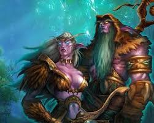

Night Elves

In a sentence
Ten thousand years of immortality, spent four winters ago to kill one demon. They are still processing it.
Playable: Yes · Faction: Alliance · Homeland: Teldrassil · Capital: Darnassus · Leader: High Priestess Tyrande Whisperwind
Where They Stand
The Kaldorei survived The Sundering by withdrawing from the world entirely — ten millennia of isolation in Ashenvale and beyond, guarding Nordrassil, sleeping in barrow dens, and forgetting how to negotiate.
Then The Third War came to their door, and they detonated their World Tree to destroy Archimonde.
How They Got Here
They had an empire. Around the Well of Eternity, ten thousand years ago, and by their own admission it was magnificent and it was rotten. Their queen’s court opened a door for the Legion.
The War of the Ancients nearly ended them. They won. The Well exploded, the continent broke, and the survivors crawled out onto a changed world with a permanent horror of arcane magic.
Then they stopped. Ten thousand years in the forests of Ashenvale and Darkshore: druids sleeping in the barrow dens, Sentinels awake and watching, nothing changing, nobody visiting. Immortality made this seem reasonable.
The Third War restarted the clock. Orcs cut into Ashenvale, Cenarius was killed, the Legion arrived, and the kaldorei found themselves fighting alongside people they had spent a war’s worth of effort trying to expel.
Then they burned Nordrassil to kill Archimonde, and woke up mortal.
Four years ago they grew Teldrassil — a new World Tree off the north coast — and joined the Alliance. Both decisions were made fast, by a small number of people, and are being second-guessed daily.
Who Leads Them
Tyrande Whisperwind, High Priestess of Elune, rules — and rules alone, which is not the arrangement anyone planned.
- Malfurion Stormrage, her partner and the first druid, is lost in The Emerald Dream. His body sleeps. Nobody will say for how long.
- Fandral Staghelm runs the Cenarion Circle in Malfurion’s absence. He grew Teldrassil against the Dragon Aspects’ advice and refused their blessing. He lost his son at The War of the Shifting Sands and something in him did not come back.
- The Sentinels answer to Tyrande and are the actual instrument of kaldorei policy.
- The Wardens — the jailers — are largely elsewhere, chasing an escapee. See Illidan Stormrage.
Society is matriarchal. The Sentinels (military) and the Sisters of Elune (priesthood) are women’s institutions. The Cenarion Circle was men’s until very recently. Both arrangements are now under strain, because a mortal people cannot afford to keep half its population out of any role.
Where They Fit
Awkwardly, and recently. The Alliance is four years old to them — an eyeblink — and they joined it because Jaina Proudmoore’s people fought beside them at Mount Hyjal, not because they like humans.
They bring the Alliance the entire western continent, an unmatched scouting corps, and the Cenarion Circle — which is also full of Tauren, and therefore constitutes the only warm cross-faction relationship in the world.
They also bring an absolute prohibition on arcane magic and a view of Ashenvale logging as desecration rather than trade, which makes them a difficult ally at exactly the points where the Alliance would like to be flexible.
What They Just Survived
- The loss of immortality — chosen, collective, and not yet grieved
- The Third War, Cenarius’s death, and the burning of Nordrassil
- Illidan’s release after ten thousand years of imprisonment, and his escape
What They Are Fighting Now
| Where | Who | Why |
|---|---|---|
| Ashenvale | Warsong orcs | Logging. To the Horde a supply line; to the kaldorei a desecration on the site of Cenarius’s death. |
| Darkshore, Ashenvale | Corrupted Furbolg | Old allies driven mad. This one genuinely grieves them. |
| Felwood, Jaedenar | Satyr, and worse | Legion residue that never left, in a forest that is visibly dying |
| Azshara | Naga | Their own exiled kin, returned from the sea after ten thousand years |
| Teldrassil | Something | The tree took root without a blessing. The druids are not saying more than that. |
What They Want
Tyrande wants the world put back, which is not on offer, and is settling for holding Kalimdor.
The Cenarion Circle wants Felwood cleansed and the Dream made safe, and is short-handed because half its membership is still asleep in the barrow dens.
Ordinary kaldorei want to know how long they have. Nobody has told them what a mortal night elf’s lifespan is, because nobody knows. It is the question underneath every other question.
A quiet faction wants out of the Alliance and back into isolation, and it is growing.
Character Traits
- Xenophobic, and working on it — the Alliance is four years old and feels like a compromise
- Deeply hostile to arcane magic — it destroyed their empire. Mage is not a night elf option and that is policy.
- Ecological absolutism — Horde logging in Ashenvale is not a trade dispute, it is desecration
- Patient to the point of paralysis — a decade is a short time to consider something
How They Talk
Formal, unhurried, and full of moon-language. Darnassian phrases survive in common speech even when kaldorei are speaking to outsiders, and they rarely bother to translate.
| Phrase | Meaning |
|---|---|
| ”Ishnu-alah.” | Well fortune to you. The standard greeting. |
| ”Ishnu-dal-dieb.” | Good fortune to you. The standard reply. |
| ”Elune-adore.” | Elune be with you. Warmer, more devout. |
| ”Ande’thoras-ethil.” | May your troubles be diminished. A farewell, and what you say to the bereaved. |
| ”Bandu thoribas.” | Prepare to fight. A formal challenge, not a threat. |
| ”Ash karath!” | Get it done. A Sentinel’s order. |
| ”Thero’shan.” | Honoured student. Its pair, shan’do, means honoured teacher. Both are earned. |
| ”In a hundred years it will not matter.” | Was wisdom. Has recently become a very dark joke. |
What They Make of the Others
Not symmetrical, on purpose
How a people sees its neighbours rarely matches how those neighbours see them. The gaps are where the roleplay is.
Humans — Children who have not stopped moving long enough to learn anything. There is real gratitude for Hyjal underneath it, and real bafflement that a people who live sixty years behave as though they have all the time there is.
Dwarves — Tolerable until they start digging. The kaldorei view is that some things were buried by people who knew what they were doing, and that the Explorers’ League has never once asked whether it should.
Gnomes — The machines are an offence. The gnomes themselves are almost impossible to dislike, which the kaldorei find irritating in a way they have not resolved.
Orcs — Ashenvale. Cenarius. They cut the forest where he died and they are still cutting. Whatever the orcs say about blood curses and freedom, a demigod is dead and the axes have not stopped.
Forsaken — Obscene. Not evil — obscene. Death is part of the cycle and these things have stepped out of it and kept walking, and the kaldorei have no framework that makes room for that.
Tauren — The surprise of the age. Cenarius took tauren students, the Circle took tauren partners, and the warmest relationship the night elves have is with a people on the other side of the line.
Darkspear Trolls — The thing nobody says aloud. The kaldorei rose from troll stock in the deep past, every troll alive knows it, and a night elf asked directly will change the subject with great composure.
Playing One
The best night elf PCs are the ones caught between eras — old enough to remember the world before, young enough to have to live in the one after.
Four shapes worth taking:
- Sentinel — you fought at Mount Hyjal and you cannot understand why the war did not end when you won it
- Awakened druid — you went into the barrow den before The Third War and came out after it. Your people are mortal. Nobody warned you.
- Young kaldorei — born within the last century, which makes you a child. You have never known immortality and find the elders’ grief slightly self-indulgent, which you would never say aloud.
- Doubter — a scholar or priestess who thinks Staghelm was wrong about Teldrassil and cannot get anyone senior to listen
Questions worth answering at session zero: How old are you, and how has that changed? Were you awake for The Third War? What do you actually think of the Alliance — and of humans specifically, who live sixty years and act as though they have time?
Related
Teldrassil · Darnassus · Tyrande Whisperwind · Malfurion Stormrage · Fandral Staghelm · Cenarion Circle · The Emerald Dream · The Sundering · Ashenvale · Elune · A Short History of Azeroth